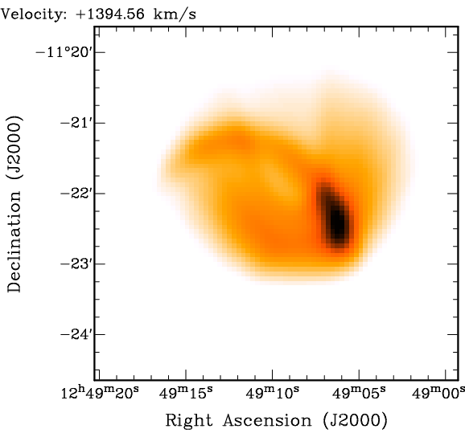
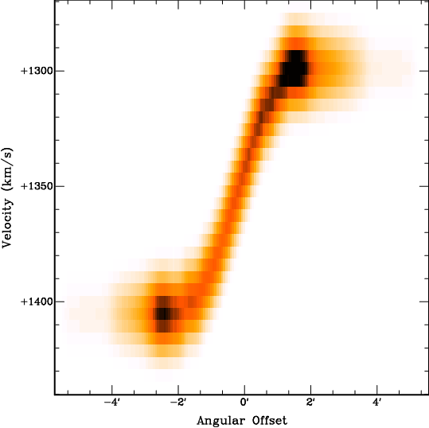
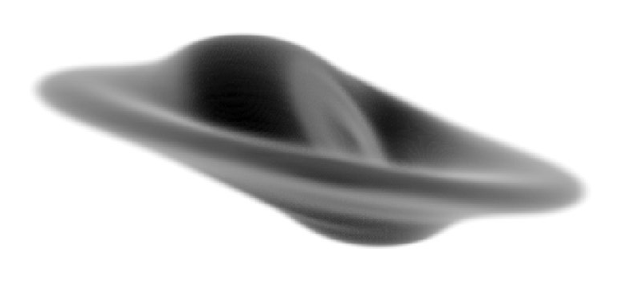
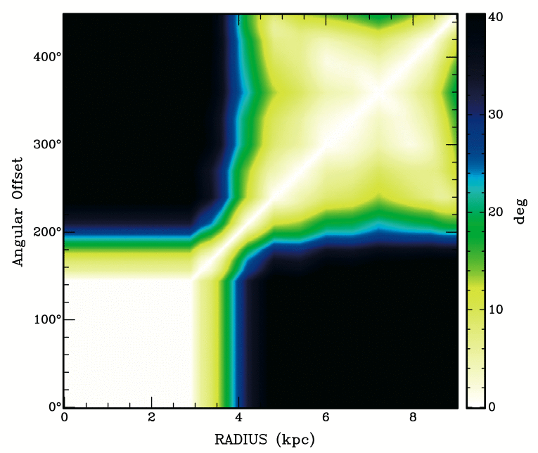
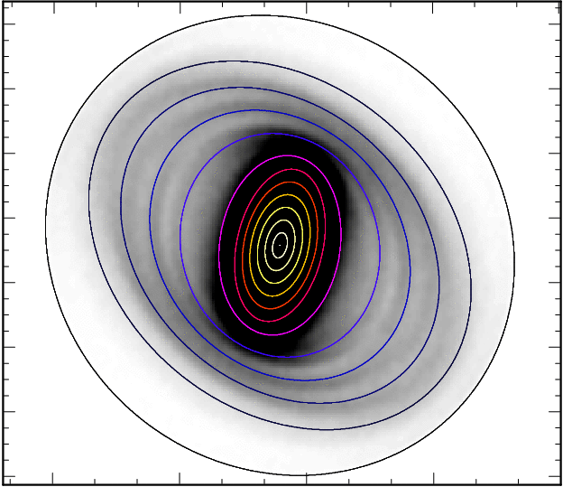
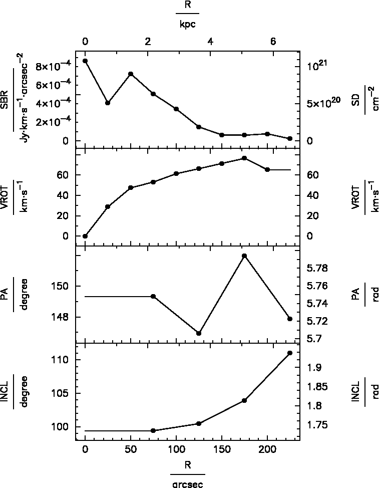
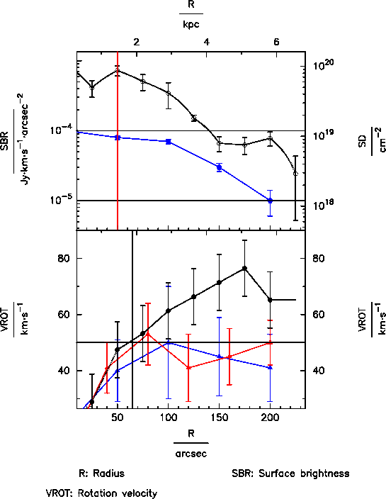

The output possibilities implemented in TiRiFiC are discussed in this section. TiRiFiC offers the output of output tables, simple parameter plots, and analytic data sets. For the output of viewgraphs, TiRiFiC makes use of the pgplot library. From version 2.2.0 on, for all images and cubes, the FLEXIBLE IMAGE TRANSPORT SYSTEM (FITS) format is used as an output format. Until version 2.1.5, the format of the output model data cube is GIPSY format.
Please notice that some of the output possibilities have not been tested for some while and might be unreliable. We expressively tag these and describe the restrictions in their description. Please contact us if you encounter an unexpected behaviour not described here.
| Contents: |
| Name | Category | Unit | Description |
| LOGNAME | I/O (optional) | Name of logfile. | |
| ACTION | I/O (optional) | Specify reaction on present logfile. |
With the parameter LOGNAME, the user specifies the name of a fits table, which basically contains a list of χ2 values, which are calculated during the fitting process. If the fitting process is interrupted, TiRiFiC will recognise the existence of the logfile when the fitting process gets restarted. In that case the parameter ACTION) will be checked whether the fitting process should be continued (ACTION 0), stopped (ACTION 2), or started from scratch (ACTION 1). If the fitting process is meant to be continued (ACTION 0), TiRiFiC will repeat the minimisation process, but instead of generating models to evaluate the χ2, the χ2 will be read from the logfile (this is much faster), until the last saved χ2 has been read, and then continue with the normal fitting process. If ACTION 1 is chosen, the logfile will be overwritten from scratch.
Example:
LOGFILE= HRGH_log
ACTION= 0
While fitting, the logfile HRGH_log will be produced. If e.g. the machine TiRiFiC has been running on has been rebooted (by someone who will get a well-deserved hiding later on), the logfile will be used to repeat the fitting process much faster up to the point where the machine has been rebooted (e.g. by the system administrator).
|
||
| Fig. 1: TiRiFiC runtime output in the GIPSY environment. This output is produced using FITMODE= 2. | ||
When producing a model data cube or while fitting, TiRiFiC dumps some
information about the status of the fitting process and the model
onto the screen. The information is refreshed for every model
generation. If
| FITMODE 1 | FM/SM | found minimum/searching minimum |
| BL: | Current loop number | |
| KL: | Total number of nested-intervals iterations | |
| TM: | Total number of calculated models | |
| KW: | Current first parameter in fitting group | |
| FR: | Current first node number (ring) in fitting group | |
| KM: | Calculated model in current iteration/maximum number of modeld in this iteration | |
| NP: | Number of point sources disk 1/disk 2/ ... | |
| TF: | Total flux (Jy km s-1) disk 1/ disk 2/ ... | |
| CC: | current χ2 | |
| DC: | change in χ2; current χ2 - previous χ2 | |
| SW: | Current stepwidth for current fitting group/start stepwidth | |
| AC: | 1: stopping condition fulfilled. 0: not fulfilled |
For FITMODE > 1, the following information is displayed:
| FITMODE > 1 | L: | Current loop number |
| I: | Total number of iterations/maximum number of iterations | |
| M: | Models in current iteration/maximum number in current iteration/total number of models | |
| P: | Current first parameter in fitting group (for FITMODE 2) | |
| R: | Current first node number (ring) (for FITMODE 2) | |
| A: | Current size in iteration/minimum size in iteration (informative only for FITMODE 2) | |
| N: | Number of point sources disk 1/disk 2/ ... | |
| F: | Total flux (Jy km s-1) disk 1/ disk 2/ ... | |
| C: | current χ2 | |
| S: | Current size (see here) |
After the fitting process has finished, or if only a model has been produced without fitting (LOOPS 0) a concluding summary is displayed for FITMODE > 1:
| FITMODE > 1, concluding log | Finished | Indicating that the fitting process is finished |
| N: | Number of point sources disk 1/disk 2/ ... | |
| F: | Total flux (Jy km s-1) disk 1/ disk 2/ ... | |
| C: | current χ2 | |
| S: | Current size (see here); undefined for LOOPS 0 |
Example 1:
FM BL:1 KL:2 TM:13 KW:PA FR:1 KM:6/70 NP:112690/0 TF:2.25E+01/0.00E+00 CC:6.483763E+06 DC:-2.9E+02 SW:+4.72E-01/2.00E+00 AC:1
The output indicates that FITMODE = 1. The minimising process is running through its first loop, the second fitting group is optimised. The 13th model has been generated, the currently first parameter of the fitting group is the position angle of ring 1. The current model consists of 112690 point sources, corresponting to a total flux of 22.5 Jy km s-1. No second disk has been generated. The current χ2 is 6.5·106. The current model decreases the χ2 by a value of 290 and is hence regarded a better model. The step width in the current nested intervals minimisation process is 0.47°, and the starting step width has been 2°. Currently, the minimiser would stop after the loop (still satisfied).
Example 2:
L:1/1 I:06/5.0E+06 M:11/5.0E+06/063 P:CONDISP R:01 A:+2.9E-01/+1.0E-01 N:1.1E+05/0.0E+00 F:+1.2E+02/+0.0E+00 C:3.221E+06 S:+1.8E+308
The output indicates that FITMODE > 1.The minimising process is running through its first loop. The iteration is the sixth of maximally 5000000. 11 models have been calculated in the current iteration, while 5000000 per iteration are the maximum. 63 models have been calculated so far. The first parameter of the current fitting group is the global dispersion (indicating that FITMODE 2, otherwise P: would be set to "GEN", since for the downhill simplex algorithm all parameters are optimised synchonously). The current first ring has the number 1 (this is the default for the global parameter CONDISP). The current step width is 0.29 km s-1, while the grid normalisation is 0.1 km s-1. The current model consists of 1.1·105 point sources with a total flux of 120 Jy km s-1. No second disk appears to be modelled. The current χ2 is 3.2·106, and the current size of the fitting process is an impossibly high number, indicating that the fitting process has started (and again an indication that FITMODE 2. For other fitting modes, the size is always well defined, while for FITMODE 2, the size is undefined in the first loop.
Example 3:
Finished N:114743/0 F:1.22E+02/0.00E+00 C:3.220933E+06 S:8.875388E+01
The output indicates that FITMODE > 1. The fitting process has stopped, or LOOPS 0 (this is not the case, see end of discussion). The current model consists of 1.1·105 point sources with a total flux of 120 Jy km s-1. No second disk appears to have been modelled. The χ2 is 3.2·106, and the current size of the fitting process is 89.
|  |  |
 | |
| Fig. 2: Channel map (left), total-intensity map (middle), and position-velocity diagram from a TiRiFiC output data cube. The coplanar model disk contains two Gaussian distortions ("spiral arms"). | |||
| Name | Category | Unit | Description |
| OUTSET | I/O (required) | Name of output data cube | |
| OUTCUBUP | I/O (required) | Frequency of updating OUTSET |
With OUTSET, the user specifies the name of an output data cube. The output data set is the geometrical model and has the same dimensions as the input data set, specified with the keyword INSET. The parameter OUTCUBUP is an integer number and specifies the numbers of model calculations after which the output data set gets renewed with a model reflecting the current geometrical parameters during the fitting process. At the end of a fitting process, a best-fit model is always written to disk (if LOOPS 0 is chosen, this is simply the model reflecting the input parameters).
Example:
OUTSET= HRGH
OUTCUBUP= 124
The name of the output data cube is "HRGH". Every 124th model during the fitting process is written to disk, as well as the best-fit model at the end of the fitting process.
| Name | Category | Unit | Description |
| TABLE | I/O (optional) | Name of output table listing geometrical parameters per node | |
| BIGTABLE | I/O (no default) | Name of output table listing geometrical parameters per sub-ring | |
| DISTANCE | I/O (default 10) | Mpc | Distance of object, only needed for output (default: 10 Mpc) |
| REFRING | I/O (default 5) | Number of the reference node to calculate several intrinsic parameters (e.g. warp angle). Default: 5 or NUR if NUR < 5 |
Please notice that this output possibility is currently being revised. Until further notice, we advise against the usage of the parameters TABLE and BIGTABLE.
With TABLE, the user provides the name of an ASCII output table, showing for each row a list of parameters at different radii (nodes). The table contains also a list of derived parameters (such as radius converted to kpc), which require additional information. With the parameter DISTANCE, the user defines the distance of the object in units of Mpc. With the parameter REFRING (default: 5 or NUR if NUR < 5), the user defines a reference node, with respect to which certain derived quantities are calculated (e.g. the warp angle, the inclination of each ring with respect to the reference ring). The parameters REFRING and DISTANCE are also evaluated for the output of a larger table, listing the same parameters as the TABLE output, but not per user-defined node, but per sub-ring. The name of the table is is specified by the parameter BIGTABLE.
Example:
TABLE= HRGHTAB.txt
BIGTABLE= HRGHBTAB.txt
DISTANCE= 300
REFRING= 8
The name of the output data table is "HRGHTAB.txt", which is an ASCII file listing geometrical parameters and derived quantities. All values are listed at the user-defined nodes (rings). Another output table, identical to HRGHTAB.txt apart from the fact that the output is sampled at the sub-rings is called "HRGHBTAB.txt". Derived quantities are calculated assuming a distance of 300 Mpc of the object, and relative to the reference ring 8.
| Name | Category | Unit | Description |
| TIRDEF | I/O (optional) | Name of output TiRiFiC .def file for repeated fitting runs | |
| TIRACC | I/O (default 5) | Numerical accuracy for the output .def files TIRDEF and TIRSMO (default: 5) | |
| TIRNR | I/O (optional) | Number of rings in the output .def files TIRDEF and TIRSMO | |
| TIRRAD | I/O (optional) | arcsec | Radii of nodes in the output .def files TIRDEF and TIRSMO |
| TIRSMO | I/O (optional) | Hanning-filtered version of TIRDEF | |
| TIRLEN | I/O (default 5) | Length of Hanning filter used for TIRSMO (default: 3) |
Most users use the output .def file as the numerical output of TiRiFiC. The user specifies its name with the keyword TIRDEF. TiRiFiC will then produce an output ASCII file that can be used as an input for TiRiFiC. The output .def file is identical to the input file, but the geometrical parameters are updated to be the result of the fitting process. All output geometrical parameters in the .def file have the numerical accurary defined with the parameter TIRACC, while the numerical accuracy of the parameters XPOS and YPOS is always increased by 2. The user has the possibility to regrid the geometrical parameters by explicitly redefining the number of rings with the parameter TIRNR, and the ring raddi with the parameter TIRRAD. The .def files will then contain the best-fit parameters, but regridded onto the node radii specified with the keyword TIRRAD (via interpolation as specified with INTY). With TIRSMO, the user defines the name of an output .def file, which is identical to TIRDEF, while the parameter values are the result of a Hanning filtering of the geometrical parameters as found in the TIRDEF file. The length of the Hanning window (number of channels from 0 to 0) can be specified with the parameter TIRLEN (default: 5, which corresponds to usual Hanning). Notice that with changing the number of rings the parameters VARY and VARINDX might specify an illegal range in radii, which has to be adjusted manually.
Example:
TIRDEF= HRGH_out.def
TIRACC= 3
TIRNR= 10
TIRRAD= 0 10 20 30 40 50 60 70 80 90
TIRSMO= HRGH_smo_out.def
TIRLEN= 5
After fitting has finished, TiRiFiC will produce an output file HRGH_out.def, identical to the input file, for which the geometrical parameters reflect the final best-fit solution. The numerical accuracy is 3. The output parameters are regridded to 10 rings with the radii 0 arcsec, 10 arcsec, 20 arcsec, 30 arcsec, 40 arcsec, 50 arcsec, 60 arcsec, 70 arcsec, 80 arcsec, and 90 arcsec. Additionally, an output .def file HRGH_smo_out.def will be produced, which is identical to HRGH_out.def, but the geometrical parameters are median-filtered, with the length of the filter being 5.
|  | |
| Fig. 3: TiRiFiC spatial 3D model, rendered with the rendering software Karma. | |
| Name | Category | Unit | Description |
| COOLGAL | I/O (optional) | Name of output fits file, containing a spatial 3D realisation of the output model. | |
| COOLBEAM | I/O (default 10) | arcsec | FWHM of a convolving function to smooth the spatial 3D model as specified with COOLGAL (default: 10 arcsec) |
| COOLBIN | I/O (default 1) | Number of voxels along each axis per input voxel for spatial 3D model as specified with COOLGAL (default: 1) |
Specifying a name for the keyword COOLGAL, TiRiFiC produces a fits file containing a spatial 3D-model with the specified name. The 3D model, based on the best-fit geometrical parameters, is constructed as described in the section geometrical parameters. However, instead of projecting the 6D phase-space model onto a data cube with velocity being the third axis, it gets projected onto a data cube with a third spatial axis. The size of the third axis is identical to the maximum size of the axes in right-ascension and declination of the input data cube. The grid spacing of the third axis is identical to the grid spacing in the spatial domain (which should be identical for the right ascension and the declination axis). The output cube can be made having smaller voxels using the keyword COOLBIN. Along each axis, the number of pixels is increased by that number, but not the size. After gridding, the model gets convolved with a 3D Gaussian with FWHM specified with the keyword COOLBEAM.
Tips:
The user should be aware that with a third axis that is usually much larger (in terms of pixels) than for a spectral data cube, the memory consumption can become very demanding and exceed the capacity of the computer, on which the model is generated. In that case, use another machine, or use an input data cube with larger, but fewer pixels in the spatial domain.
Since TiRiFiC is meant to provide a minimal geometrical model, leaving most of the interpretation to the user, a few parameters, which can be interpreted in terms of 3D structure are implemented as a projection. As a consequence, a 3D spatial model might look not as expected. Example: a bowl-shaped warp can be parametrised using the parameter LS0, which however describes a planar shift along the minor axis of the projected orbit. Any 3D model will not reproduce exactly a bowl-shaped warp (which is a likely interpretation of a non-vanishing LS0, but not compulsory) unless the inclination is 90°. If the user decides to model this shift making use of the parameter WM0A, which induces a real bowl-shape into the model (in other words, with this choice the user already interpretes the observation inducing a pre-defined geometric), the result of the 3D spatial model will be a bowl-shaped warp.
The spatial 3D fits cube can be visualised using any suited rendering software. Highly recommendable is the xray task of the Karma software package by Richard Gooch. Use e.g. "hot_gas_mono" as a "Shader".
Example:
COOLGAL= HRGH_cool.fits
COOLBEAM= 12
Produces a 3D spatial model conforming to the best-fit parameters. After gridding, the model is convolved with a 3D Gaussian with a FWHM of 12 arcsec.
|  | ||
| Fig. 4: TiRiFiC tiltogram output. The diagram shows the inclination of the disk at one radius with respect to the disk at another radius (hence, the diagram is symmetric and 0 on its diagonal). Only available for the first disk. The output shown here has been produced making use of the BIGTILT= keyword. | ||
| Name | Category | Unit | Description |
| TILT | I/O (optional) | Name of output fits file, containing a tiltogram per ring. | |
| BIGTILT | I/O (optional) | Name of output fits file, containing a tiltogram per sub-ring. |
Please notice that this output possibility is currently being revised. Until further notice, we advise against the usage of the parameters TILT and BIGTILT.
Specifying a name for the keyword TILT, TiRiFiC produces a fits file containing a tiltogram. This is a diagram showing at a set of radii the inclination of the disk with itself at a different radius. Such a diagram has been used to investigate the warp structure of galaxies (see e.g. Józsa 2007, A&A, 468, 903). With TILT, the tiltogram is calculated per user-defined node, with BIGTILT, the tiltogram is calculated per sub-ring.
Example:
TILT= HRGH_tilt.fits
BIGTILT= HRGH_bigtilt.fits
Produces a tiltogram calculating the mutual inclination of the disk with itself per ring, with the name HRGH_tilt.fits, and a tiltogram with the mutual inclination of the disk with itself calculated per sub-ring, with the name HRGH_bigtilt.fits.
|  | ||
| Fig. 5: TiRiFiC inclinogram output, overlaid as Renzogram on model total-intensity map. To produce this image, the Karma task kvis was used. | ||
| Name | Category | Unit | Description |
| INCLINO | I/O (optional) | Name of output fits file, containing an inclinogram data cube. Only for first disk. | |
| IN_REFINE | I/O (default 1) | Increase of TILT in spatial resolution compared to input data cube (default: 1) |
Please notice that this output possibility is currently being revised. Until further notice, we advise against the usage of the parameters INCLINO and IN_REFINE.
With the keyword INCLINO, the user specifies the name of an output fits data cube containing an "inclinogram". The data cube has the same spatial dimensions as the input data cube and its number of planes is identical to the number of nodes (rings) NUR of the model. Each plane contains a filled ellipse (value= 1), representing the projected orbit a corresponding to each ring of the model. With that, producing a Renzogram using a suitable software package (e.g. the Karma software package), an overlay can be produced that reflects the geometrical properties of the model (see viewgraph). With the integer parameter IN_REFINE, the user specifies a factor by which the output inclinogram is refined in each spatial direction (to avoid pixelisation of the contours).
Example:
INCLINO= HRGH_inclino.fits
IN_REFINE= 7
Produces an inclinogram (data cube) representing the projected orbits of the model at the ring radii. The size of the single pixels in the inclinogram is reduced by a factor of 7 in each spatial direction compared to the input data cube.
|  |  | |||
| Fig. 6: Left: simple TiRiFiC viewgraph output. Right: more complex TiRiFiC viewgraph output. | ||||
| Name | Category | Unit | Description |
| GR_DEVICE | I/O (optional) | pgplot device for parameter plot | |
| GR_PARMS | I/O (optional) | Parameters to plot, first parameter on abscissa | |
| Name | Category | Unit | Description |
| GR_SBRP | I/O (optional) | Plot subrings? (1: yes 0: no) | |
| GR_LGND | I/O (optional) | Plot legend with axis descriptors? (1: yes 0: no) | |
| GR_TXHT | I/O (optional) | Text height in pgplot units (1/40th of the plot height) | |
| GR_SBHT | I/O (optional) | TXHT | Symbol height (in units of TXHT) |
| GR_MR | I/O (optional) | TXHT | Margin between plot and right hand axis descriptors (in units of TXHT) |
| GR_ML | I/O (optional) | TXHT | Margin between plot and left hand axis descriptors (in units of TXHT) |
| Name | Category | Unit | Description |
| GR_XMIN= | I/O (optional) | abscissa units | Axis range: minimum of abscissa |
| GR_XMAX= | I/O (optional) | abscissa units | Axis range: maximum of abscissa |
| GR_XLOG= | I/O (optional) | Format abscissa logarithmically? (1: yes 0: no) | |
| Name | Category | Unit | Description |
| GR_YMIN_i= | I/O (optional) | ordinate units | Axis range: minimum of ordinate, ith plot |
| GR_YMAX_i= | I/O (optional) | ordinate units | Axis range: maximum of ordinate, ith plot |
| GR_YLOG_i= | I/O (default 0) | Format abscissa of ith plot logarithmically? (1: yes 0: no) | |
| GR_SYMB_i= | I/O (default -1) | Pgplot symbol used for main data series ith plot | |
| GR_SIZE_i= | I/O (default 1) | TXHT | Size of symbols for main data series |
| GR_COL_i= | I/O (default 0) | Pgplot color of main data series (1-15) | |
| GR_LINES_i= | I/O (default 0) | Plot lines for main data series? (1: yes, 0: no) | |
| GR_INTER_i= | I/O (default 0) | Interpolation scheme for lines for main data series; 0: linear, 1: natural cubic spline, 2: natural Akima | |
| GR_ERRB_i= | I/O (default 0) | Plot error bars for main data series? | |
| GR_ERRV_i= | I/O (default 1) | ordinate units | List error bars for main data series |
| Name | Category | Unit | Description |
| GR_VERL_i= | I/O (default 0) | Number of vertical lines to plot for ith plot | |
| GR_VLVA_i= | I/O (optional) | abscissa units | Positions of vertical lines for ith plot |
| GR_VLCA_i= | I/O (optional) | Pgplot colors of vertical lines ith plot (1-15) | |
| GR_HORL_i= | I/O (optional) | Number of horizontal lines to plot for ith plot | |
| GR_HLVA_i= | I/O (optional) | ordinate units | Positions of horizontal lines for ith plot |
| GR_HLCA_i= | I/O (optional) | Pgplot colors of horizontal lines ith plot | |
| Name | Category | Unit | Description |
| GR_NRAD_i= | I/O (default 0) | Number of series to add for ith plot | |
| GR_NPAD_i_j= | I/O (optional) | Number of data points of jth additional series of ith plot | |
| GR_XPAD_i_j= | I/O (optional) | abscissa units | Values of data points, jth additional data series, ith plot, abscissa |
| GR_YPAD_i_j= | I/O (optional) | ordinate units | Values of data points, jth additional data series, ith plot, ordinate |
| GR_ERAD_i_j= | I/O (optional) | Plot error bars for data points, jth additional data series, ith plot? (1: yes, 0: no) | |
| GR_EBAD_i_j= | I/O (optional) | ordinate units | Errors for data points, jth additional series, ith plot |
| GR_SYAD_i_j= | I/O (optional) | Pgplot symbol of data points, jth additional series, ith plot | |
| GR_SIAD_i_j= | I/O (optional) | TXHT | Size of pgplot symbols, jth additional data series, ith plot |
| GR_COAD_i_j= | I/O (optional) | Pgplot color of jth additonal data series, ith plot | |
| GR_LIAD_i_j= | I/O (optional) | Lines between jth additional series ith plot? (1: yes, 0: no) | |
| GR_INTERPAD_i_j= | I/O (defaults to INTY) | Interpolation scheme for lines jth additional series ith plot; 0: linear, 1: natural cubic spline, 2: natural Akima | |
| Name | Category | Unit | Description |
| GR_PRFR | I/O (optional) | Reference ring for central position | |
| GR_PRFX | I/O (optional) | deg | Right ascension of reference position |
| GR_PRFY | I/O (optional) | deg | Declination of reference position |
| Name | Category | Unit | Description |
| ITOU | I/O (default 1.248683·1024) | atoms cm-2 (Jy km s-1 arcsec-2)-1 | Conversion from Jy km s-1 arcsec-2 to (HI-) atoms cm-2 |
| Name | Category | Unit | Description |
| GR_CONT | I/O (optional) | Continue after plot (any value)? |
Initialisation of the graphics output: with the parameter GR_DEVICE, the user specifies the "graphics device" for parameter plots, using pgplot syntax. The most common specifications are
| GR_DEVICE | /xwin | : | X-window on screen | , where |
| filename/ps | : | B/W postscript file, portrait format, with name filename | ||
| filename/lps | : | B/W postscript file, landscape format, with name filename | ||
| filename/cps | : | Color postscript file, portrait format, with name filename | ||
| filename/lcps | : | Color postscript file, landscape format, with name filename |
the possible specifications are determined when compiling the pgplot library (in the drivers.list file, see here, section "Select the device drivers").
With the keyword GR_PARMS, the user provides a (whitespace-separated) list of at least two geometrical parameters parameters to plot at the end of the fitting process (which, in the case of LOOPS 0, ends immediately). The names of the parameters are identical to the ones for the corresponding geometrical parameters, leaving out the trailing "=". For n parameters, n-1 plots are produced, ordered vertically. The abscissa (x-axis) of all plots is defined by the first parameter specified with the keyword GR_PARMS, the consecutive parameters define the ordinates starting from the top plot (second parameter name) to the bottom plot. In addition to the geometrical parameters, the parameter DENS can be added to the list (surface density in atoms cm-2 or alternatively solar masses pc-2). For each parameter, the input unit is given on the left side of each plot, an alternative unit is shown on the right side.
Example 1:
GR_DEVICE= hyperplot.ps/cps
GR_PARMS= RADI SBR VROT
A (portrait-) colour plot hyperplot.ps is written to disk, containing two viewgraphs, one showing surface brightness against radius, the other showing rotation velocity against radius.
Global formatting: several parameters are used to format all parameter plots. The data nodes at which the model is defined is plotted after a fit. Nodes which have been de-selected with the parameter VARINDX are not plotted as data points. With GR_SBRP, the user specifies whether the parameters should be plotted such that the sub-rings are visible (1: yes, 0: no). GR_LGND specifies whether the viewgraphs should come with a legend (GR_LGND 1) attached at the bottom or not (GR_LGND 0). GR_TXHT specifies the basic height of symbols in pgplot units (1 pgplot unit is 1/40 of the plot height). Other sizes are specified relative to GR_TXHT. With GR_MR, the user specifies the margin between the plot and the right hand axis descriptors, in units of GR_TXHT. With GR_ML, the user specifies the margin between the plot and the left hand axis descriptors, in units of GR_TXHT. GR_SBHT is the basic size of symbols (graph markers) in units of GR_TXHT. GR_XMIN defines the minimum of the abscissa for all plots, and GR_XMAX its maximum. With GR_XLOG, the user can initiates a logarithmic scaling of the abscissa (GR_XLOG 1) or suppress it (default: GR_XLOG 0).
Formatting main parameter series: For the ith plot on the output graphics, the user specifies the ordinate maximum with the parameter GR_YMAX_i (defaults to best guess by TiRiFiC) and its minimum with GR_YMIN_i, the parameter GR_YLOG_i allowing (GR_YLOG_i 1) or suppressing (GR_YLOG_i 0, default) logarithmic scaling of the single ordinates in the ith viewgraph. With GR_SYMB_i, the user specifies the pgplot symbol used for the main data series in the ith viewgraph. Negative numbers correspond to polygons with the absolute value of the given number denoting the number of corners, -1 to a circle. The size of the symbols of the main data series in multiples of GR_SBHT can be given with the parameter GR_SIZE_i (default: 1), its color with the parameter GR_COL_i. GR_COL_i describes the colour using the pgplot color definition. If GR_LINES_i is set to 1, lines are drawn between the single data points, if it is set to 0 (the default), no lines are drawn between the data points of the main data series of the ith plot. The shape of the lines is determined by the parameter GR_INTER_i. The user has the choice between linear interpolation (GR_INTER_i=0, default), natural cubic spline (GR_INTER_i=1), and non-rounded Akima interpolation with natural boundary conditions (GR_INTER_i=2). We use the interpolation algorithms of the GNU scientific library (GSL) and refer to those www pages for details. GR_ERRB_i 1 specifies that error bars should be plotted for the ith main data series (parameter ith plot), with the errors (as many as data points, i.e. NUR values) specified in a whitespace-separated list GR_ERRV_i. It is foreseen to provide automatic error bars as soon as a minimisation algorithm has been implemented which provides these.
Vertical and horizontal lines:for each plot on the viewgraph, any number of horizontal and vertical lines can be overplotted. For the ith plot, the user specifies with GR_VERL_i the number of vertical lines to draw for the ith plot, with GR_VLVA_i the (whitespace-separated) positions of the vertical lines on the abscissa (x-axis), and with GR_VLCA_i the pgplot colours of the vertical lines. For the ith plot, the user specifies with GR_HORL_i the number of horizontal lines to draw for the ith plot, with GR_HLVA_i the (whitespace-separated) positions of the vertical lines on the ordinate (y-axis), and with GR_HLCA_i the pgplot colours of the horizontal lines.
Additional data series: for each plot on the viewgraph, any number of additional data series can be overplotted. For the ith plot, the user specifies with GR_NRAD_i the number of additional data series to overplot for the ith plot (default 0). The user specifies with GR_NPAD_i_j the number of additional data points of the jth additional data series for the ith plot, with GR_XPAD_i_j the values on the abscissa of the jth additional data series for the ith plot, GR_YPAD_i_j the values on the ordinate of the jth additional data series for the ith plot. With GR_ERAD_i_j the user specifies whether the jth additional data series of the ith plot should carry error bars (GR_ERAD_i_j 1) or not (GR_ERAD_i_j 0, the default), the values of which (1 per data point) should be specified with GR_EBAD_i_j. GR_SYAD_i_j denotes the pgplot symbol used for the jth additional data series of the ith plot. Negative numbers correspond to a polygon with the number of corners given by absolute value of the given number, -1 corresponds to a circle. GR_SIAD_i_j is the size of the symbols used for the jth additional data series in the ith plot in multiples of GR_SBHT. GR_COAD_i_j is the pgplot color used for the jth additional data series in the ith plot. GR_LIAD_i_j 1 determines that the data points of the jth additional data series for the ith plot should be connected with lines, GR_LIAD_i_j 0 determines that they should not be connected (default: 0). The shape of the lines is determined by the parameter GR_INTERPAD_i_j. The user has the choice between linear interpolation (GR_INTERPAD_i_j=0, default), natural cubic spline (GR_INTERPAD_i_j=1), and non-rounded Akima interpolation with natural boundary conditions (GR_INTERPAD_i_j=2). We use the interpolation algorithms of the GNU scientific library (GSL) and refer to those www pages for details.
Reference positions: If the user specifies XPOS or YPOS as a parameter to plot, the alternative axis description (on the right) is the relative position with respect to the central position of the reference ring with the number GR_PRFR (default 5 or NUR, if NUR < 5). Alternatively, a reference right ascension in degrees can be given with the parameter GR_PRFX and a reference declination in degrees can be given with the parameter GR_PRFY.
Ending the plotting routine: If a plot output is asked for by specifying the GR_DEVICE parameter, TiRiFiC will stop to wait until the GR_CONT parameter has been entered (any value), upon which for some graphics devices the graphics output will vanish.
Example 2:
It is assumed that a simple tilte-ring fit has been made, with 10 nodes.
GR_DEVICE= pretty.ps/vcps
GR_PARMS= RADI SBR VROT
GR_SBRP= 1
GR_LGND= 1
GR_TXHT= 1
GR_SBHT= 0.5
GR_MR= 5
GR_ML= 5
GR_XMIN= 20
GR_XMAX=
GR_XLOG=
GR_YMIN_1=
GR_YMAX_1=
GR_YLOG_1= 1
GR_SYMB_1= 4
GR_SIZE_1= 1
GR_COL_1= 1
GR_LINES_1= 0
GR_INTER_1= 0
GR_ERRB_1= 1
GR_ERRV_1= 1.0E-4 1.1E-4 1.2E-4 1.3E-4 1.4E-4 1.5E-5 1.6E-5 1.7E-5 1.8E-5 1.9E-5
GR_VERL_1= 1
GR_VLVA_1= 50
GR_VLCA_1= 2
GR_HORL_1= 2
GR_HLVA_1= 1E-4 1E-5
GR_HLCA_1= 1 1
GR_NRAD_1= 1
GR_NPAD_1_1= 5
GR_XPAD_1_1= 0 50 100 150 200
GR_YPAD_1_1= 1E-4 8E-5 7E-5 3E-5 1E-5
GR_ERAD_1_1= 1
GR_EBAD_1_1= 5E-6 5E-6 5E-6 4E-6 4E-6
GR_SYAD_1_1= -5
GR_SIAD_1_1= 1.2
GR_COAD_1_1= 4
GR_LIAD_1_1= 1
GR_INTERPAD_1_1= 0
GR_YMIN_2= 30
GR_YMAX_2=
GR_YLOG_2= 0
GR_SYMB_2= -1
GR_SIZE_2= 1
GR_COL_2= 1
GR_LINES_2=
GR_ERRB_2= 1
GR_ERRV_2= 10 10 10 10 10 10 10 10 10 10
GR_VERL_2= 1
GR_VLVA_2= 65
GR_VLCA_2= 1
GR_HORL_2= 2
GR_HLVA_2= 50
GR_HLCA_2= 1
GR_NRAD_2= 2
GR_NPAD_2_1= 5
GR_XPAD_2_1= 0 50 100 150 200
GR_YPAD_2_1= 20 40 50 45 41
GR_ERAD_2_1= 1
GR_EBAD_2_1= 15 11 20 14 12
GR_SYAD_2_1= -3
GR_SIAD_2_1= 1.2
GR_COAD_2_1= 4
GR_LIAD_2_1= 1
GR_NPAD_2_2= 6
GR_XPAD_2_2= 0 40 80 120 160 200
GR_YPAD_2_2= 10 41 53 41 45 50
GR_ERAD_2_2= 1
GR_EBAD_2_2= 10 9 11 12 10 8
GR_SYAD_2_2= -3
GR_SIAD_2_2= 1.2
GR_COAD_2_2= 2
GR_LIAD_2_2= 1
This input produces a plot like given in Fig. 6, right side (downloadable in ps format here).
| Category | Unit | Description | |
| LOGNAME= | I/O (optional) | Name of logfile. | |
| ACTION= | I/O (optional) | Specify reaction on present logfile. | |
| Category | Unit | Description | |
| OUTSET= | I/O (required) | Name of output data cube | |
| OUTCUBUP= | I/O (required) | Frequency of updating OUTSET | |
| Category | Unit | Description | |
| TABLE= | I/O (optional) | Name of output table listing geometrical parameters per node | |
| BIGTABLE= | I/O (no default) | Name of output table listing geometrical parameters per sub-ring | |
| DISTANCE= | I/O (default 10) | Mpc | Distance of object, only needed for output (default: 10 Mpc) |
| REFRING= | I/O (default 5) | Number of the reference node to calculate several intrinsic parameters (e.g. warp angle). Default: 5 or NUR if NUR < 5 | |
| Category | Unit | Description | |
| TIRDEF= | I/O (optional) | Name of output TiRiFiC .def file for repeated fitting runs | |
| TIRACC= | I/O (default 5) | Numerical accuracy for the output .def files TIRDEF and TIRSMO (default: 5) | |
| TIRNR= | I/O (optional) | Number of rings in the output .def files TIRDEF and TIRSMO | |
| TIRRAD= | I/O (optional) | arcsec | Radii of nodes in the output .def files TIRDEF and TIRSMO |
| TIRSMO= | I/O (optional) | Median-filtered version of TIRDEF | |
| TIRLEN= | I/O (default 3) | Length of median filter used for TIRSMO (default: 3) | |
| Category | Unit | Description | |
| COOLGAL= | I/O (optional) | Name of output fits file, containing a spatial 3D realisation of the output model. | |
| COOLBEAM= | I/O (default 10) | arcsec | FWHM of a convolving function to smooth the spatial 3D model as specified with COOLGAL (default: 10 arcsec) |
| Category | Unit | Description | |
| TILT= | I/O (optional) | Name of output fits file, containing a tiltogram per ring. | |
| BIGTILT= | I/O (optional) | Name of output fits file, containing a tiltogram per sub-ring. | |
| Category | Unit | Description | |
| INCLINO= | I/O (optional) | Name of output fits file, containing an inclinogram data cube. Only for first disk. | |
| IN_REFINE= | I/O (default 1) | Increase of TILT in spatial resolution compared to input data cube (default: 1) | |
| Name | Category | Unit | Description |
| GR_DEVICE= | I/O (optional) | pgplot device for parameter plot | |
| GR_PARMS= | I/O (optional) | Parameters to plot, first parameter on abscissa | |
| GR_SBRP= | I/O (optional) | Plot subrings? (1: yes 0: no) | |
| GR_LGND= | I/O (optional) | Plot legend with axis descriptors? (1: yes 0: no) | |
| GR_TXHT= | I/O (optional) | Text height in pgplot units (1/40th of the plot height) | |
| GR_SBHT= | I/O (optional) | TXHT | Symbol height (in units of TXHT) |
| GR_MR= | I/O (optional) | TXHT | Margin between plot and right hand axis descriptors (in units of TXHT) |
| GR_ML= | I/O (optional) | TXHT | Margin between plot and left hand axis descriptors (in units of TXHT) |
| GR_XMIN= | I/O (optional) | abscissa units | Axis range: minimum of abscissa |
| GR_XMAX= | I/O (optional) | abscissa units | Axis range: maximum of abscissa |
| GR_XLOG= | I/O (optional) | Format abscissa logarithmically? (1: yes 0: no) | |
| GR_YMIN_i= | I/O (optional) | ordinate units | Axis range: minimum of ordinate, ith plot |
| GR_YMAX_i= | I/O (optional) | ordinate units | Axis range: maximum of ordinate, ith plot |
| GR_YLOG_i= | I/O (default 0) | Format abscissa of ith plot logarithmically? (1: yes 0: no) | |
| GR_SYMB_i= | I/O (default -1) | Pgplot symbol used for main data series ith plot | |
| GR_SIZE_i= | I/O (default 1) | TXHT | Size of symbols for main data series |
| GR_COL_i= | I/O (default 0) | Pgplot color of main data series (1-15) | |
| GR_LINES_i= | I/O (default 0) | Plot lines for main data series? (1: yes, 0: no) | |
| GR_INTER_i= | I/O (defaults to INTY) | Interpolation scheme for lines for main data series; 0: linear, 1: natural cubic spline, 2: natural Akima | |
| GR_ERRB_i= | I/O (default 0) | Plot error bars for main data series? | |
| GR_ERRV_i= | I/O (default 1) | ordinate units | List error bars for main data series |
| GR_VERL_i= | I/O (default 0) | Number of vertical lines to plot for ith plot | |
| GR_VLVA_i= | I/O (optional) | abscissa units | Positions of vertical lines for ith plot |
| GR_VLCA_i= | I/O (optional) | Pgplot colors of vertical lines ith plot (1-15) | |
| GR_HORL_i= | I/O (optional) | Number of horizontal lines to plot for ith plot | |
| GR_HLVA_i= | I/O (optional) | ordinate units | Positions of horizontal lines for ith plot |
| GR_HLCA_i= | I/O (optional) | Pgplot colors of horizontal lines ith plot | |
| GR_NRAD_i= | I/O (default 0) | Number of series to add for ith plot | |
| GR_NPAD_i_j= | I/O (optional) | Number of data points of jth additional series of ith plot | |
| GR_XPAD_i_j= | I/O (optional) | abscissa units | Values of data points, jth additional data series, ith plot, abscissa |
| GR_YPAD_i_j= | I/O (optional) | ordinate units | Values of data points, jth additional data series, ith plot, ordinate |
| GR_ERAD_i_j= | I/O (optional) | Plot error bars for data points, jth additional data series, ith plot? (1: yes, 0: no) | |
| GR_EBAD_i_j= | I/O (optional) | ordinate units | Errors for data points, jth additional series, ith plot |
| GR_SYAD_i_j= | I/O (optional) | Pgplot symbol of data points, jth additional series, ith plot | |
| GR_SIAD_i_j= | I/O (optional) | TXHT | Size of pgplot symbols, jth additional data series, ith plot |
| GR_COAD_i_j= | I/O (optional) | Pgplot color of jth additonal data series, ith plot | |
| GR_LIAD_i_j= | I/O (optional) | Lines between jth additional series ith plot? (1: yes, 0: no) | |
| GR_INTERPAD_i_j= | I/O (defaults to INTY) | Interpolation scheme for lines jth additional series ith plot; 0: linear, 1: natural cubic spline, 2: natural Akima | |
| GR_PRFR= | I/O (optional) | Reference ring for central position | |
| GR_PRFX= | I/O (optional) | deg | Right ascension of reference position |
| GR_PRFY= | I/O (optional) | deg | Declination of reference position |
| ITOU= | I/O (default 1.248683·1024) | atoms cm-2 (Jy km s-1 arcsec-2)-1 | Conversion from Jy km s-1 arcsec-2 to (HI-) atoms cm-2 |
| GR_CONT= | I/O (optional) | Continue after plot (any value)? |